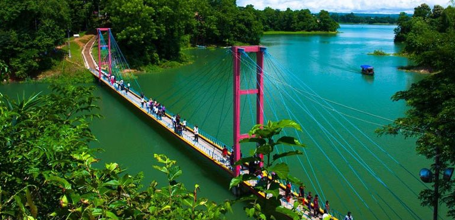

Hanging Bridge of Rangamati
Hanging Bridge: Hanging Bridge(Jhulonto Bridge in Bengali)is the landmark icon of Rangamati.It’s a popular tourist spot and a must go destination.
If you don’t visit Rangamati you will not discover a big portion of natural beauties of Bangladesh. From Chittagong a 77 km. road amidst green fields and winding hills will take you to Rangamati. It is also connected by waterway from Kaptai.[Hanging Bride, Rangamati] This is the only place to visit through out the year. Rangamati expresses her full beauty in rainy season. Trees becoming greener, waterfalls are in full tide, the river Karnaphuli in her full wave in this season. If you already visited Rangamati in winter, we advice to go there again in monsoon; you will feel the difference of nature yourself.Parjatan holiday complex is the best place to stay in Rangamati.
Parjatan holiday complex is the best place to stay in Rangamati.There are other hotels in Rangamati where you can stay. Boating is the prime attraction in Rangamati. You can go to Kaptai and also by Karnaphuli River you can go deep in side the hill areas where on the way you will find lots of natural waterfalls.If you wish you can take shower in the waterfall or you can swim in the river. By boat you can visit the tribal villages, King Chakma’s (tribal) Palace that is called Chakma Rajbari, Rajbonbihar pagoda, Tribal museum etc. You can also enjoy the tribal handmaid crafts if you go for shopping in the local market.
How To Go From Dhaka: